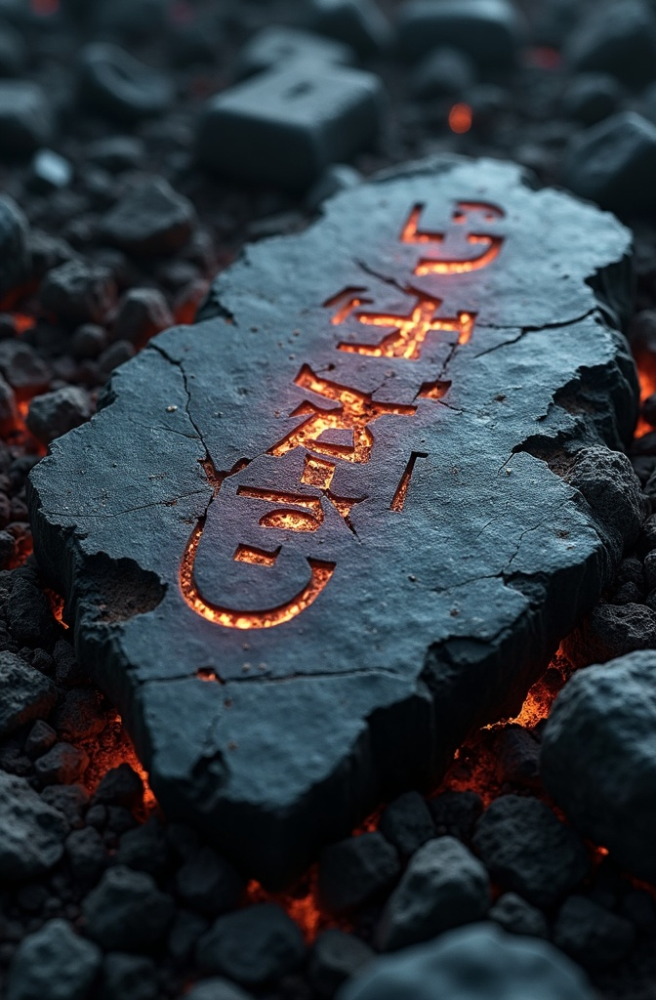

Origins
Established deep within mountain folds, Kitezh was crafted from grey granite and revered for its masterful works—vaulted halls, carved effigies, and runic architecture.
Decline
Beneath the weight of their contract to be the smiths of the gods the dwarves endured—until they rose up. Their wrath consumed large parts of the city; but some of it remains intact.
The city's end was abrupt and brutal. The dwarves were kept in check by their own kind; dwarves known as duergar (betrayers) and a garrison of Kua Toa. Once the legions of dwarves had put their mind to revolt it was all but over.

Once the heart of a powerful necromantic sect, the Ruins of Orishan lie amid the shifting dunes of formerly fertile Kaijistan, on the banks of a long-dry river bed. As a living city, Orishan stood proud in the Kingdom of Kaijistan; now, its skeleton stands half-buried in wind-blown sand, a grim warning to those who dare to enter.
Though many adventurers have attempted to carve their names into its crumbling stone, few return — and those who do tell hushed tales of whispers in the corridors and undead shadows moving beneath the moon.
Some memories can conjure powerful guardians::
Signs of former power and glory lie everywhere.
“The mountain speaks in stone—its grief never rests.”
— unknown